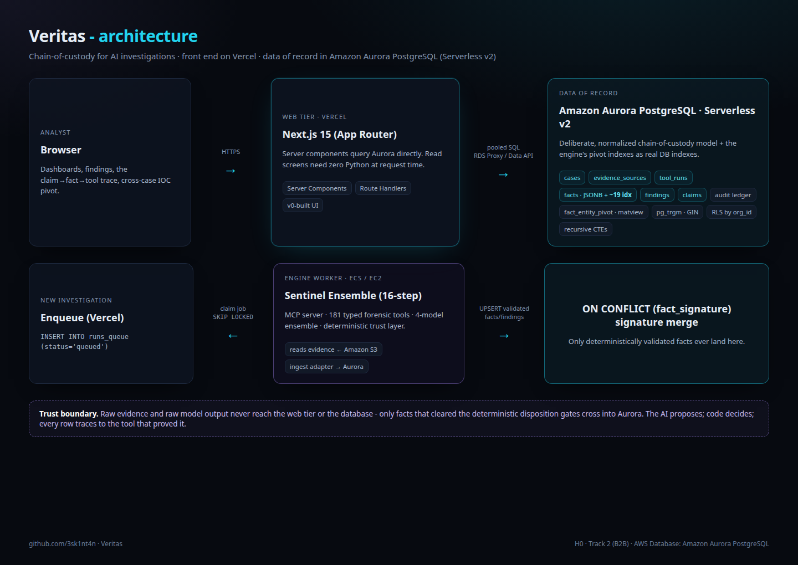

High-stakes work adopts AI fastest - incident response, fraud, compliance - and that is exactly where you cannot ship a conclusion you cannot audit. Courts, insurers, and auditors do not trust the model. Veritas makes the trust provable.
"Code overrules the AI, and every claim traces to proof" is not a slogan here - it is a SQL schema you can query. The override is a real column, the proof a real foreign key, the corroboration a real ON CONFLICT merge.